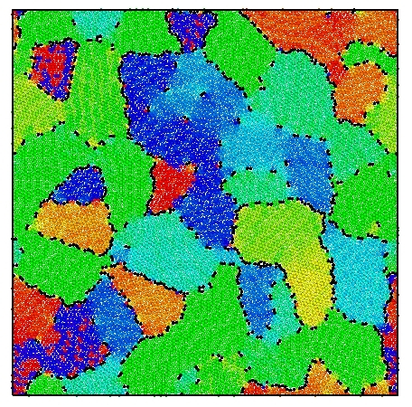

A single-layer PFC simulation gives me a continuous density field, but measuring its microstructure requires identifiable grains. I use C++/CUDA to extract density peaks and write atomic coordinates, local orientations, and quaternions to a particle dump. Python performs grain reconstruction and statistics, while OVITO provides a particle-level check of the input and orientation data.
My Python implementation adapts the atom-based framework of Martine La Boissonière and Choksi. Their method identifies grain interiors, joins neighbors with compatible orientations, assigns boundary particles, and measures grain geometry. I retain that overall strategy while using our own peak detection, sixfold orientation estimates, and local-distortion criteria.
Inspect the field and extract atoms
I inspect the real-space density field in ParaView. My C++/CUDA routines locate density maxima, turning the periodic field into discrete particle positions while retaining a density value for each peak.
Compute orientations and write a dump
For this monolayer workflow, I calculate in-plane orientation myself from sixfold bond order. I export the positions, density, orientation angle, and a quaternion representing rotation about the layer normal in a LAMMPS-style dump. This supplies the orientation explicitly rather than relying on a bulk three-dimensional structure-identification step.
Segment grains and calculate statistics
My Python code selects grain cores using peak density and local distortion. Region growing joins periodic neighbors within a 3.5° misorientation tolerance, treating angles separated by 60° as equivalent. Neighborhood voting assigns boundary particles, followed by cleanup of small fragments and artifacts. Summing local atomic areas gives grain areas and equivalent diameters; CSV summaries then feed the grain-size distribution plots.
Check the particle view in OVITO
I load the original particle dump in OVITO to inspect positions and the exported orientations. Alongside it, I check the Python segmentation maps and distributions. This lets me examine defects, interfaces, and sensitivity to analysis settings before interpreting a change in grain statistics as physical evolution.
I compute grain areas and equivalent diameters, then normalize each diameter by the mean to compare grain-size distributions. Barmak et al. provide the thin-film statistical background, while Backofen et al. show how PFC simulations can be compared with those distributions. These references guide the analysis; they do not establish a universal distribution or a new growth exponent for my data.
The definitions and protocol are given in Supplementary Section S3.3 of our preprint.
G. Martine La Boissonière and R. Choksi. Atom based grain extraction and measurement of geometric properties. Modelling and Simulation in Materials Science and Engineering 26, 035001 (2018).
K. Barmak et al. Grain growth and the puzzle of its stagnation in thin films: The curious tale of a tail and an ear. Progress in Materials Science 58, 987–1055 (2013).
R. Backofen et al. Capturing the complex physics behind universal grain size distributions in thin metallic films. Acta Materialia 64, 72–77 (2014).




Model background · Original PFC formulation · PFC and density-functional theory.